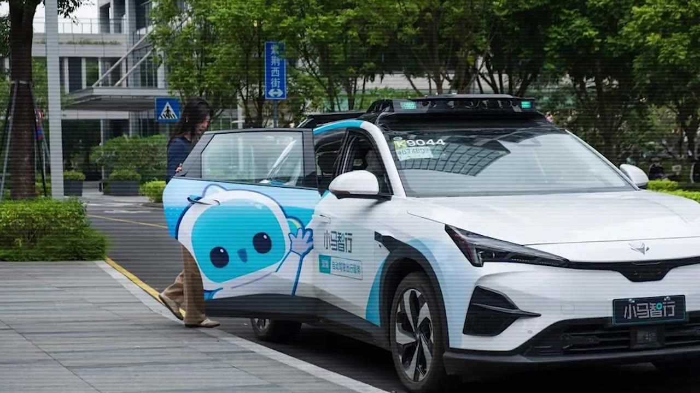

"테슬라 카메라 고집은 자존심일 뿐" 1억에서 30만 원으로 폭락한 중국산 라이다의 역습, 한국 자율주행의 현실은? (퓨처링크 차두원 대표)
▶ 원본 영상 보기한눈에 보기
- 자율주행은 이미 상용화 단계로, 미국·중국에서는 각각 약 5,000대 규모의 무인 로보택시가 운행 중이고 한국은 기술 수준이 약 91~92%로 평가되지만 규제·투자·택시업계 갈등으로 상용화가 늦다.
- 한국은 광주 200대 실증을 시작으로 2027년 예산에 3~5개 도시 3,000대 확대를 잡았고, 퓨처링크는 중국 포니AI 소프트웨어를 현대 코나 EV에 한국화해 강남에서 9만 km 이상 시험했다.
- 테슬라(카메라 중심)와 웨이모·포니AI(라이다 포함)는 공존할 전망이며, 로보택시에서는 라이다를 기본 장착하는 쪽이 대세다.
- 라이다 가격은 7만 5천 달러대에서 중국 내 약 200달러까지 떨어져 센서보다 차값·무인 운행 여부·원격 관제 인력 비율이 수익성을 좌우하고, 목표 단가는 차량+센서 3만~3만 5천 달러다.
- 일본·독일·EU·중국 등이 2030년을 자율주행 확산 목표로 잡고 있어, 차두원 대표는 2030년을 본격적인 사업화 시점으로 본다.
이런 분께 도움이 됩니다
- 자율주행·로보택시 산업이 어디까지 왔고 한국이 왜 느린지 한 번에 파악하고 싶은 분.
- 테슬라 vs 웨이모, 라이다 vs 카메라 논쟁과 로보택시 수익 구조(유닛 이코노믹스)를 이해하고 싶은 분.
핵심 내용
자율주행의 정의와 현재 수준
- 레벨 0~5 중 레벨 2까지는 운전자 보조 시스템(ADAS)이고 레벨 3부터가 자율주행이다. 테슬라의 감독형 방식도 현 기준으로는 자율주행이 아니다. (3:01)
- 운전자는 항상 감시하고 개입해야 하며, 개입하면 오토파일럿 등은 멈춘다.
- 모든 회사의 목표는 "인간 운전자보다 안전하게"이며, 통계적으로 입증되고 있다고 한다.
- 미국 사고의 약 90%는 너무 법규를 잘 지켜서 뒤차가 추돌하는 경우다. (5:21)
- 탑승 후 5분이면 무서워하던 사람도 잠들거나 휴대폰을 본다고 한다. (4:09)
- 미국(캘리포니아·텍사스)과 중국(베이징·선전 등)에서는 무인 로보택시가 각각 약 5,000대 규모로 운행 중이다.

한국이 느린 이유
- 차두원 대표는 규제·비용·서비스 세 관점으로 본다. (7:14)
- 택시업계 갈등: 한국은 우버식 TNC가 없어 택시와의 합의가 필요하다.
- 코로나 이후 서울 기업택시 가동률이 30%까지 떨어져 기업택시 쪽은 오히려 자율주행을 원한다.
- 면허제로 가면 기업택시는 면허·회사를 인수하고, 개인택시는 면허를 빌려주는 방식의 제도가 거론된다.
- 정부 정책 변화: 시범지구에서 대도시 실증으로 전환해 올해 광주에 200대(현대차 공급), 2027년 예산에 3~5개 도시 약 3,000대를 잡았다.
- 한국은 아직 운전자가 반드시 타야 하며, 도심 제한속도 50km/h와 교통법규를 철저히 지켜 답답하게 다닌다.
💡 기술 격차보다 "시범 중심 vs 대규모 상용화" 전략 차이가 체감 격차를 만들었다.
원격 관제와 무인 운행
- 무인 차량도 문제가 생기면 차가 신호를 보내고, 사람이 언어·목적지 지정으로 지시하면 차가 스스로 움직인다. 사람이 직접 운전하지 않는다. (13:18)
- 1인이 관제하는 차량 수가 핵심이며, 1대 1이면 운전자를 둔 것과 비용이 같다. 포니AI는 1명당 약 30대를 언급했다. (12:36)
포니AI 협력과 한국화(퓨처링크)
- 소프트웨어는 포니AI 것을 가져와 한국 지도(도로 지도)를 만들고 교통·지형에 맞춰 현지화한다. 웨이모가 와도 같은 과정이 필요하다. (23:13)
- 현대 코나 EV 10대로 강남에서 9만 km(6,000시간 이상) 시험했고, 하루 약 300km 주행에 운전자 개입이 약 한 번 수준이다. (5:02, 24:42)
- 어려운 곳(강남)에서 시작해야 엣지 케이스 데이터를 많이 얻고 확장이 빠르다.
- 튜닝 사례: 신호등 구분, 빌딩 빛 반사, 최종 차선 변경 시점(처음엔 막판 → 약 500m 전방), 황색 신호 시 통과 판단은 사람과 비슷하게 세팅.
- 서울 등에서 로보택시 사업을 준비 중이며, 2단계로 중국 차 수입도 공식 발표했다고 한다.
- 포니AI 선택 이유는 오너 간 이해관계가 맞았고 웨이모급으로 평가받는 수준이기 때문.
후발주자의 추격 속도와 완성차 전략
- 웨이모는 R&D 시작부터 무인 상용화까지 약 12년, 포니AI는 약 6년 8개월로 단축됐다. 레퍼런스·인력 이동·벤치마킹 덕이다. (38:49)
- 웨이모·포니AI 모두 차량이 약 1,000대 전후부터 급증했다. 그전까지는 기술 안정성·서비스를 검증하고 이후 완성차 협력으로 대량 생산한다. (40:41)
- 레벨 4는 판매보다 서비스 성격이 강해 GM·포드 등 레거시 OEM 대부분이 접었고, 전기차 기반 신생 업체(테슬라·중국)가 주도한다. 현대는 포티투닷과 레벨 4를 직접 개발한다. (32:41)
- 일본은 도요타-웨이모, 닛산·혼다-웨이브 등 해외 협력을 택했다. 한국은 해외 기술에 다소 폐쇄적이라는 평이다.
테슬라 vs 웨이모: 카메라와 라이다
- 대표님은 공존을 전망한다. 개인 승용은 가격 때문에 카메라 중심(테슬라, 샤오펑, 현대 아트리아 등), 로보택시는 안전이 비즈니스 핵심이라 라이다가 사실상 필수다. (42:36, 43:22)
- 테슬라 사이버캡은 3만 달러 목표, 텍사스에서 테슬라 로보택시 약 1,200대 운영(모델 Y 약 570대 외 사이버캡). (37:16)
- 같은 가격이면 라이다를 택한다. 라이다는 장거리를 인식하고(웨이모 오하이·포니AI 7세대는 600~700m) 비 오는 날에도 강하다.
- 카메라 고집은 "우리도 테슬라 방식으로 할 수 있다"는 제조사 정신도 작용한다고 평가한다.
💡 로보택시는 센서보다 안전·운영이 핵심이라 라이다 기본 장착이 대세다.
가격 경쟁: 센서보다 차값·인건비
| 항목 | 내용 |
|---|---|
| 라이다 가격 | 옛 7만 5천 달러 → 한국 약 2,000달러, 중국 약 200달러 (44:11) |
| 웨이모 오하이(지커 SUV) | 기존 재규어 랜드로버 대비 반값 |
| 목표 단가 | 차량+센서 3만~3만 5천 달러 (47:18) |
| 핵심 변수 | ① 차값 ② 운전자 제거 여부 ③ 원격 관제 1인당 대수(인건비) |
- 이미 "누가 더 싸게 만드느냐"의 차값 경쟁 단계다. 머스크의 3만 달러는 중국을 염두에 둔 가격으로 본다.
- 먼 미래에는 차가 소비재가 되고 하차감이 줄겠지만, 대표님은 "우리 세대에서는 아닐 것"이라 본다. (48:05)
V2X와 데이터 이슈
- 차량·도로·신호 통신(V2X)은 각국이 추진하지만, 로보택시 업체는 단독 주행을 선호하고 신호등도 카메라로 거의 100% 인식한다. V2X는 개인용 레벨 4·버스·트럭에 더 유용하다. (54:14)
- 데이터: 퓨처링크는 서버를 국내(사옥 2층)에 두며 서울시 유상운송 허가·검증 중이고, 중국 업체도 규제를 잘 알아 준수한다고 한다. 테슬라는 데이터 제공 동의 서명을 받는다. (57:44)
- 테슬라는 한국 데이터 학습으로 이미 상당히 로컬화된 느낌이라고 한다. (52:42)
2030년 전망
기억할 숫자·인용
- 미국·중국 로보택시 각 약 5,000대, 한국 기술 수준 91~92%
- 퓨처링크 강남 시험 9만 km, 하루 300km에 개입 약 1회
- 라이다: 7만 5천 달러 → 중국 약 200달러
- 로보택시 목표 단가 3만~3만 5천 달러, 전환점 약 1,000대
- 웨이모 상용화까지 12년 vs 포니AI 6년 8개월
- "5분이면 주무시는 분도 있다" (처음 타는 사람의 반응)
생각해볼 점
- 대표는 포니AI와 협력 중인 사업자라 중국 기술·협력 전략에 우호적일 수 있다 (영상 속 입장과 별개로 구분해 볼 필요).
- 미·중 갈등(미국의 중국 커넥티드카 수입 제한)과 데이터 반출 문제는 영상에서 가볍게만 다뤄졌다.
- 한국 91~92%는 설문 기반 추정으로, 상용화 격차를 수치만으로 판단하기 어렵다.
바로 해볼 일
- 광주 자율주행 실증(200대) 진행 상황과 운행 지역 확인하기
- 라이다 vs 카메라 로보택시 수익 구조(차값·관제 인력)를 정리해 보기
- 책 『2030 자율주행 이코노미』 목차 살펴보기